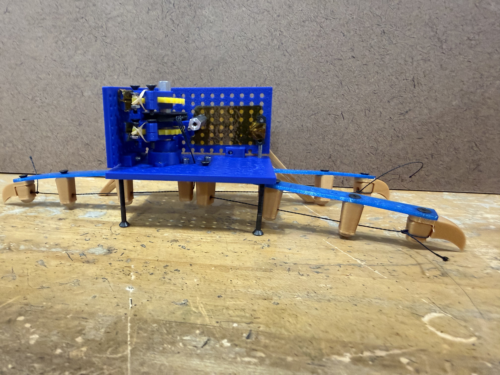
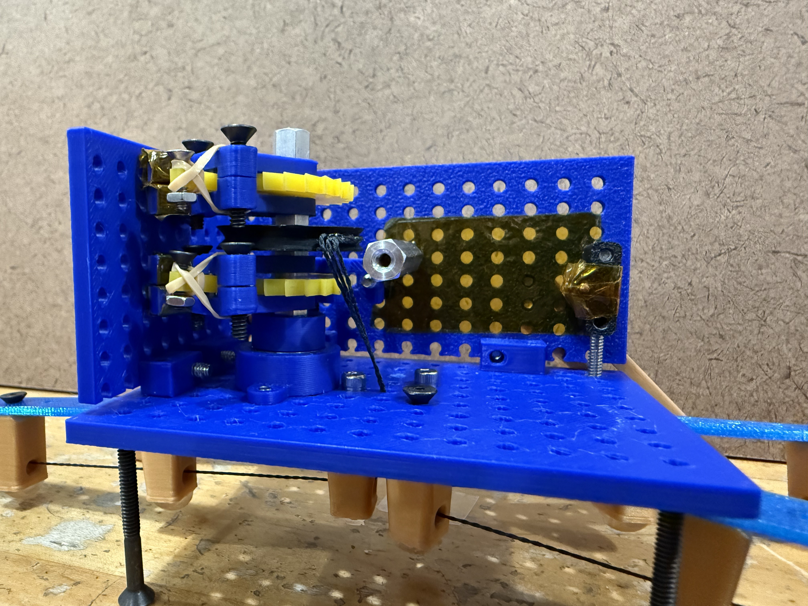
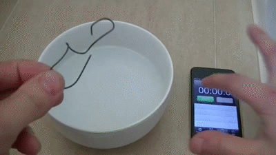
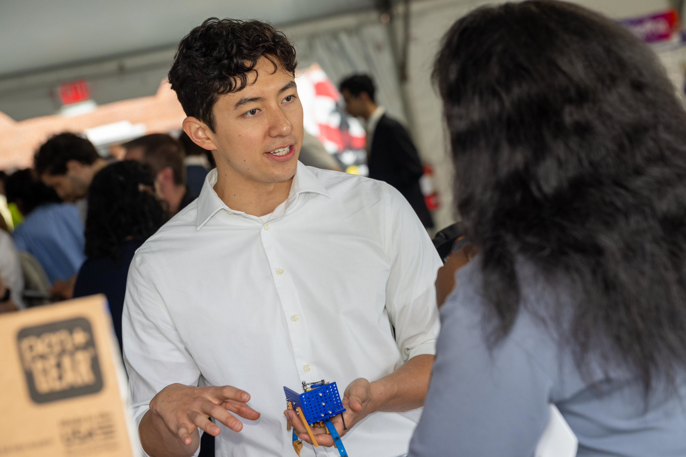

SENIOR CAPSTONE // KHANJUR R&D
Wireless Shape Memory Alloy (Nitinol) Robotic Claw
ESP32 Firmware
Embedded C++
Nitinol SMA
MOSFET PWM
SolidWorks
Objective & Mechanical Tradeoffs
Robotic end-effectors traditionally depend on bulky electric servomotors and gearboxes that add inertial weight to distal joints and introduce mechanical backlash. Collaborating with Khanjur R&D, our objective was to replace electric motors with resistive Joule-heated Shape Memory Alloy (Nitinol) wire.
- Thermal-Current Control: Engineered high-frequency PWM switching across logic-level N-channel MOSFETs to meter heating current accurately, preventing wire anneal damage while ensuring repeatable closure force.
- Embedded Wireless Server: Programmed custom C++ firmware on an ESP32 microcontroller hosting an asynchronous local Wi-Fi web server, achieving smartphone teleoperation with sub-50ms latency without relying on external networks.
- Hardware Evolution: Iterated through PVC bench rigs, internal ratchet mechanisms, and 3D printed mechanical levers to amplify stroke displacement from subtle alloy contraction.
Result: Delivered a silent, backlash-free
end-effector that dropped actuator mass significantly compared
to traditional DC gearmotors.
Actuator Architecture
Actuator:
Resistive Nitinol SMA Wire
Controller:
ESP32 (Dual-Core 240MHz)
Switching:
Logic-Level N-MOSFET (PWM)
Control UI:
Local Wi-Fi Web Server
Mechanical CAD:
SolidWorks 2026
Prototype Showcase & Actuation Video
Click the large preview to open fullscreen high-resolution inspection.
Final Assembly

Interior View
Actuation Video

Nitinol Thermal Demo Ratchet Latch
Ratchet Latch

Expo Presentation